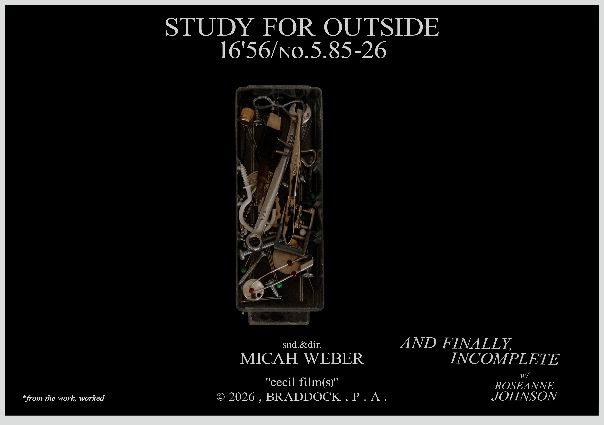

"Study for Outside", 16'56, 4k, 16:9, digital file, ©2026
An unsentimental look at human-non-human relations and the material tensions that arise between them, this film explores how inside and outside, sound and image, are defined by their refusal to cohere into a narrative object. The result is a quietly evasive work, anchored in a sense of place (Braddock, Pennsylvania) through scenes of violence, arrest, and play: “Nearer than breathing, closer than hands and feet” (qtd. in Morton, “Thinking Ecology,” 2010).
- study-for-outside_mhw_01.png
- study-for-outside_mhw_02.png
- study-for-outside_mhw_03.png
- study-for-outside_mhw_04.png
- study-for-outside_mhw_05.png

(BACK)